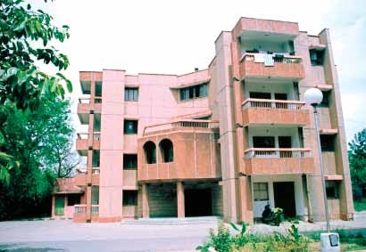

Dr. Kalpana Chawla, born in Karnal, Haryana, India. Kalpana in Hindi means "imagination". Her interest in flying was inspired by India's leading industrialists, J.R.D. Tata himself, a pioneering Indian pilot. She met and married Jean-Pierre Harrison, a flying instructor and aviation writer, in 1983 and became a naturalized United States citizen in 1990. Kalpana earned her B.E. degree in aeronautical engineering at Punjab Engineering College Chandigarh (1982) and moved to the United States in 1982 and obtained a M.S. degree in aerospace engineering from the University of Texas at Arlington (1984). Kalpana went on to earn a second M.S. degree in 1986 and a Ph.D. degree in aerospace engineering in 1988 from the University of Colorado at Boulder. Later that year she began working for NASA Ames Research Center as Vice President of Overset Methods, Inc. where she did CFD research on V/STOL. She held a Certificated Flight Instructor rating for airplanes, gliders and Commercial Pilot licenses for single and multiengine airplanes, seaplanes and gliders. She joined the NASA astronaut corps in March 1995 and was selected for her first flight in 1998. Her first space mission began on November 19, 1997 as part of the six astronaut crew that flew the Space Shuttle Columbia flight STS-87. She was the first Indian-born woman and the second person of Indian origin to fly in space. During STS-87, she was responsible for deploying the Spartan Satellite which malfunctioned, necessitating a spacewalk by Winston Scott and Takao Doi to capture the satellite. The Space Shuttle Columbia met with a fatal accident on its return path while entering the earth atmosphere on February 1, 2003. Dr. Kalpana Chawla shall continue to inspire engineering aspirants around the world for her exemplary courage, extraordinary capabilities and her love for space explorations. This hostel has the capacity to accommodate 42 girls.
